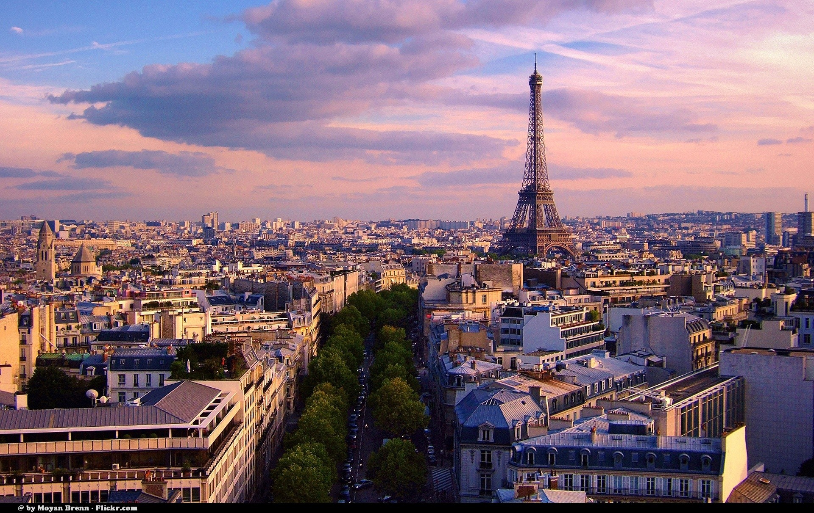

Paris, cunoscut și sub numele de “Orașul Luminilor”, este capitala Franței și un simbol al eleganței și romantismului. Parisul este faimos pentru arhitectura sa impresionantă, bulevardele largi și monumentele emblematice, cum ar fi Turnul Eiffel, Catedrala Notre-Dame și Arcul de Triumf. Orașul este un centru cultural major, găzduind muzee de renume mondial precum Luvru și Musée d’Orsay, care adăpostesc capodopere ale artei universale. Parisul este, de asemenea, cunoscut pentru cafenelele sale pitorești, patiseriile delicioase și moda de înaltă clasă. Plimbările pe malurile Senei și vizitele în cartierele istorice, cum ar fi Montmartre și Le Marais, oferă o experiență autentică a vieții pariziene.
